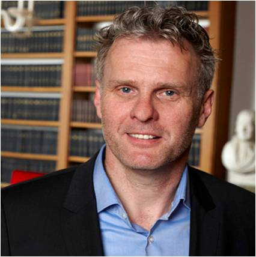

<td align="center" class="tbcolor10" colspan="2" valign="top">
<table border="0" cellpadding="0" height="100%" width="100%">
<tbody><tr><td align="right" height="35px" style="font-size:9pt">
<a href="javascript:window.close()" title="关闭本窗口">关闭窗口</a>｜<a href="print.asp?id=543735" target="_blank" title="打印本页内容">打印张贴版</a>    

</td></tr>
<tr>
<td align="center" height="500" valign="top">
<table border="0" cellpadding="4" cellspacing="0" height="100%" style="border-collapse: collapse;word-break:break-all;" width="86%">
<tbody><tr>
<td align="center" height="80px"><span style="font-family:方正小标宋简体;font-size: 25px;color: #C70E5C"><b><font color="black">讲座预告 | 荷兰皇家科学院院士Jan Theeuwes学术讲座（已更新讲座时间）</font></b></span></td>
</tr>
<tr>
<td align="center" height="50px" style="font-size: 9pt"><font color="#808080">心理学院　2025/3/24 14:16:00</font><br/> 
<font color="#F8F8F8" style="font-size:9pt">（钟沛基 2022280095）</font></td>
</tr>
<tr>
<td height="300" valign="top">
<p class="MsoNormal" style="text-align: center;"></p><p class="MsoNormal"><b><span style="font-family:宋体;mso-ascii-font-family:Calibri;
mso-ascii-theme-font:minor-latin;mso-hansi-font-family:Calibri;mso-hansi-theme-font:
minor-latin;mso-fareast-language:ZH-CN">讲座名称：</span></b><span lang="EN-US" style="mso-fareast-language:ZH-CN">Top-down, bottom-up and selection
history-driven selection<o:p></o:p></span></p>
<p class="MsoNormal"><b><span style="font-family:宋体;mso-ascii-font-family:Calibri;
mso-ascii-theme-font:minor-latin;mso-hansi-font-family:Calibri;mso-hansi-theme-font:
minor-latin;mso-fareast-language:ZH-CN">讲座时间：</span></b><span lang="EN-US" style="mso-fareast-language:ZH-CN">2025</span><span style="font-family:宋体;
mso-ascii-font-family:Calibri;mso-ascii-theme-font:minor-latin;mso-hansi-font-family:
Calibri;mso-hansi-theme-font:minor-latin;mso-fareast-language:ZH-CN">年</span><span lang="EN-US" style="mso-fareast-language:ZH-CN">3</span><span style="font-family:
宋体;mso-ascii-font-family:Calibri;mso-ascii-theme-font:minor-latin;mso-hansi-font-family:
Calibri;mso-hansi-theme-font:minor-latin;mso-fareast-language:ZH-CN">月</span><span lang="EN-US" style="mso-fareast-language:ZH-CN">28</span><span style="font-family:
宋体;mso-ascii-font-family:Calibri;mso-ascii-theme-font:minor-latin;mso-hansi-font-family:
Calibri;mso-hansi-theme-font:minor-latin;mso-fareast-language:ZH-CN">日上午</span><span lang="EN-US" style="mso-fareast-language:ZH-CN">10</span><span style="font-family:
宋体;mso-ascii-font-family:Calibri;mso-ascii-theme-font:minor-latin;mso-hansi-font-family:
Calibri;mso-hansi-theme-font:minor-latin;mso-fareast-language:ZH-CN">：</span><span lang="EN-US" style="mso-fareast-language:ZH-CN">00<o:p></o:p></span></p>
<p class="MsoNormal"><b><span style="font-family:宋体;mso-ascii-font-family:Calibri;
mso-ascii-theme-font:minor-latin;mso-hansi-font-family:Calibri;mso-hansi-theme-font:
minor-latin;mso-fareast-language:ZH-CN">讲座地点：</span></b><span style="font-family:
宋体;mso-ascii-font-family:Calibri;mso-ascii-theme-font:minor-latin;mso-hansi-font-family:
Calibri;mso-hansi-theme-font:minor-latin;mso-fareast-language:ZH-CN">深圳大学沧海校区</span><span lang="EN-US" style="mso-fareast-language:ZH-CN">L3-1201<o:p></o:p></span></p>
<p class="MsoNormal"><b><span style="font-family:宋体;mso-ascii-font-family:Calibri;
mso-ascii-theme-font:minor-latin;mso-hansi-font-family:Calibri;mso-hansi-theme-font:
minor-latin;mso-fareast-language:ZH-CN">主讲人：</span></b><span lang="EN-US" style='font-family:"Times New Roman",serif'>Jan Theeuwes <o:p></o:p></span></p><p class="MsoNormal"><b><span style='font-family:宋体;mso-ascii-font-family:"Times New Roman";
mso-hansi-font-family:"Times New Roman";mso-bidi-font-family:"Times New Roman";
mso-fareast-language:ZH-CN'>主讲人简介：</span></b><b><span lang="EN-US" style='font-family:"Times New Roman",serif;mso-fareast-language:ZH-CN'><o:p></o:p></span></b></p>
<p class="MsoNormal"><span lang="EN-US" style='font-family:"Times New Roman",serif;
mso-fareast-language:ZH-CN'>Jan Theeuwes, </span><span style='font-family:宋体;
mso-ascii-font-family:"Times New Roman";mso-hansi-font-family:"Times New Roman";
mso-bidi-font-family:"Times New Roman";mso-fareast-language:ZH-CN'>荷兰皇家科学院院士，阿姆斯特丹自由大学教授，论文引用率</span><span lang="EN-US" style='font-family:"Times New Roman",serif;mso-fareast-language:
ZH-CN'>44600</span><span style='font-family:宋体;mso-ascii-font-family:"Times New Roman";
mso-hansi-font-family:"Times New Roman";mso-bidi-font-family:"Times New Roman";
mso-fareast-language:ZH-CN'>余次，</span><span lang="EN-US" style='font-family:"Times New Roman",serif;
mso-fareast-language:ZH-CN'>H-index</span><span style='font-family:宋体;
mso-ascii-font-family:"Times New Roman";mso-hansi-font-family:"Times New Roman";
mso-bidi-font-family:"Times New Roman";mso-fareast-language:ZH-CN'>为</span><span lang="EN-US" style='font-family:"Times New Roman",serif;mso-fareast-language:
ZH-CN'>99</span><span style='font-family:宋体;mso-ascii-font-family:"Times New Roman";
mso-hansi-font-family:"Times New Roman";mso-bidi-font-family:"Times New Roman";
mso-fareast-language:ZH-CN'>。</span><span lang="EN-US" style='font-family:"Times New Roman",serif;
mso-fareast-language:ZH-CN'>Theeuwes</span><span style='font-family:宋体;
mso-ascii-font-family:"Times New Roman";mso-hansi-font-family:"Times New Roman";
mso-bidi-font-family:"Times New Roman";mso-fareast-language:ZH-CN'>院士长期从事注意相关研究，两次获得欧洲最高基金资助（</span><span lang="EN-US" style='font-family:"Times New Roman",serif;mso-fareast-language:
ZH-CN'>ERC advanced</span><span style='font-family:宋体;mso-ascii-font-family:
"Times New Roman";mso-hansi-font-family:"Times New Roman";mso-bidi-font-family:
"Times New Roman";mso-fareast-language:ZH-CN'>，</span><span lang="EN-US" style='font-family:"Times New Roman",serif;mso-fareast-language:ZH-CN'>250</span><span style='font-family:宋体;mso-ascii-font-family:"Times New Roman";mso-hansi-font-family:
"Times New Roman";mso-bidi-font-family:"Times New Roman";mso-fareast-language:
ZH-CN'>万欧元）。在注意捕获和注意选择领域作出了突出的贡献，相关研究结果发表在</span><span lang="EN-US" style='font-family:"Times New Roman",serif;mso-fareast-language:ZH-CN'>Annual
Review of Psychology</span><span style='font-family:宋体;mso-ascii-font-family:
"Times New Roman";mso-hansi-font-family:"Times New Roman";mso-bidi-font-family:
"Times New Roman";mso-fareast-language:ZH-CN'>，</span><span lang="EN-US" style='font-family:"Times New Roman",serif;mso-fareast-language:ZH-CN'>Trends
in Cognitive Sciences</span><span style='font-family:宋体;mso-ascii-font-family:
"Times New Roman";mso-hansi-font-family:"Times New Roman";mso-bidi-font-family:
"Times New Roman";mso-fareast-language:ZH-CN'>，</span><span lang="EN-US" style='font-family:"Times New Roman",serif;mso-fareast-language:ZH-CN'>Psychological
Science</span><span style='font-family:宋体;mso-ascii-font-family:"Times New Roman";
mso-hansi-font-family:"Times New Roman";mso-bidi-font-family:"Times New Roman";
mso-fareast-language:ZH-CN'>，</span><span lang="EN-US" style='font-family:"Times New Roman",serif;
mso-fareast-language:ZH-CN'>Journal of Experimental Psychology</span><span style='font-family:宋体;mso-ascii-font-family:"Times New Roman";mso-hansi-font-family:
"Times New Roman";mso-bidi-font-family:"Times New Roman";mso-fareast-language:
ZH-CN'>系列，</span><span lang="EN-US" style='font-family:"Times New Roman",serif;
mso-fareast-language:ZH-CN'>Brain</span><span style='font-family:宋体;mso-ascii-font-family:
"Times New Roman";mso-hansi-font-family:"Times New Roman";mso-bidi-font-family:
"Times New Roman";mso-fareast-language:ZH-CN'>，</span><span lang="EN-US" style='font-family:"Times New Roman",serif;mso-fareast-language:ZH-CN'>Nature
Communications</span><span style='font-family:宋体;mso-ascii-font-family:"Times New Roman";
mso-hansi-font-family:"Times New Roman";mso-bidi-font-family:"Times New Roman";
mso-fareast-language:ZH-CN'>等认知科学刊物上。</span><span lang="EN-US" style='font-family:
"Times New Roman",serif;mso-fareast-language:ZH-CN'><o:p></o:p></span></p><p class="MsoNormal"><b><span style='font-family:宋体;mso-ascii-font-family:"Times New Roman";
mso-hansi-font-family:"Times New Roman";mso-bidi-font-family:"Times New Roman";
mso-fareast-language:ZH-CN'>讲座介绍：</span></b><b><span lang="EN-US" style="mso-fareast-language:ZH-CN"><o:p></o:p></span></b></p>
<p class="MsoNormal"><span lang="EN-US" style='font-family:"Times New Roman",serif'>The
current presentation introduces the integrated tripartite framework of
attentional control (Theeuwes, 2025<i>, Annual Review of Psychology</i>),
highlighting the interaction and competition among top-down, bottom-up, and
selection-history influences. We will explore recent behavioral, EEG, and fMRI
studies that focus on how selection history shapes attentional control. We will
specifically focus on proactive versus reactive attentional suppression. The
findings suggest that selection history continuously adapts the weights within
a so-called "spatial priority map," which dynamically governs the
deployment of covert and overt attention at any given moment. Locations that
previously contained relevant information are up-regulated, while locations
with a higher probability of containing distracting information are down-regulated.
In this framework, selection follows the priority landscape formed by combining
various signals, such as current goals and bottom-up saliency, with priority
weights influenced by previous selection episodes.</span></p><p class="MsoNormal"><span lang="EN-US" style='font-family:"Times New Roman",serif'>欢迎感兴趣的师生参加！</span></p><p class="MsoNormal"><span lang="EN-US" style='font-family:"Times New Roman",serif'><br/></span></p><p class="MsoNormal" style="text-align: right;"><span lang="EN-US" style='font-family:"Times New Roman",serif'>深圳大学心理学院</span></p><link href="/szu.css" rel="stylesheet" type="text/css"/><link href="/szu.css" rel="stylesheet" type="text/css"/></td>
</tr>
<tr><td height="0" style="font-size: 9pt"></td></tr>
<tr><td align="right" style="font-size: 9pt">撰稿：俎亚男　审核：张丽  <br/>（更新于2025/3/26 17:05:00）<br/> </td></tr>
</tbody></table>
</td>
</tr>
</tbody></table>
</td>
